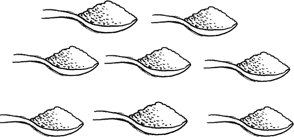

put half of level teaspoon of salt,
put half of level teaspoon of salt,1. Drink made with powdered cereal and salt.

(Powdered rice is best. But you can use finely ground maize, wheat flour, sorghum, or cooked and mashed potatoes.)
In 1 liter of clean water
put half of level teaspoon of salt,
and 8 heaping teaspoons of powdered cereal.
Boil for 5 to 7 minutes to form a liquid gruel or watery porridge. Cool the drink quickly and begin to give it to the sick person.
Caution: Taste the drink each time before you give it to make sure that it is less salty than tears and that it has not spoiled. Cereal drinks can spoil within a few hours in hot weather.
{% endblock %} {% block footer %} {% endblock %}